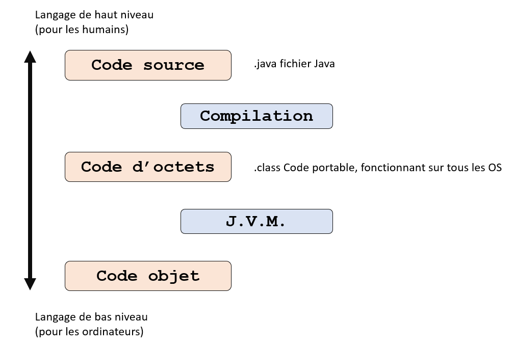
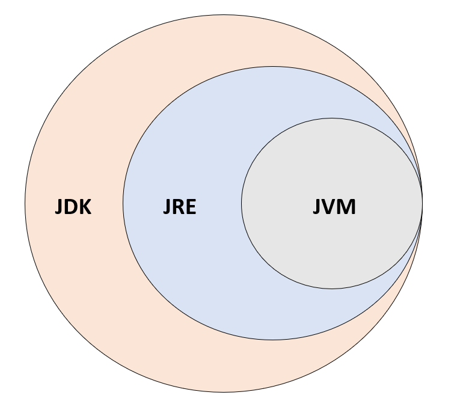

Le langage Java a été créé en 1995 par SunMicrosystem puis racheté par Oracle en 2009. Java a été conçu initialement pour réaliser des programmes embarqués, c’est-à-dire des programmes utilisés pour faire fonctionner des voitures ou des appareils électroniques par exemple. Cependant, même si Java est très présent aujourd’hui dans le domaine de l’embraqué, il est d’avantage utilisé pour de l’applicatif ou du web (Java EE, qui est une extension Java permettant de réaliser des projets web).
Java est un langage objet uniquement contrairement au C++ qui est ce qu’on appelle un langage à multiple paradigmes. Un langage à multiple paradigmes offre la possibilité de programmer de plusieurs manières différentes, comme la POO (Programmation Orientée Objet) ou le procédural. Java est également un langage de plus haut niveau que le C++. Plus un langage est de haut niveau, plus celui-ci se rapproche du langage parlé par les humains et s’éloigne du langage machine (binaire).
Java est un langage dit cross-plateforme ou portable. Le byte code ou code d’octets obtenu après la pseudo compilation d’un script peut être exécuté sur tous les systèmes d’exploitation grâce à la JVM (Java Virtual Machine).
Le schéma ci-dessous vous illustre le fonctionnement de ce langage :
Le principal défaut de Java est qu’il est impossible de gérer la mémoire comme c’est le cas dans les langages de plus bas niveau. Si un programme a donc pour vocation à gérer de la mémoire, le mieux est de le coder en C++. L’autre inconvénient du langage Java est que son temps d’exécution est plus long que pour un langage simplement compilé. Ceci peut s’expliquer par les étapes intermédiaires rajoutées par le langage pour le rendre cross-plateforme. Le dernier défaut de ce langage est qu’il est plus compliqué de faire interagir un programme Java avec l’OS de l’utilisateur.
Pour pouvoir coder en Java il est nécessaire de télécharger le JDK (Java Development Kit). Le JDK est un pack contenant le JRE (Java Runtime Environment) et la JVM.
